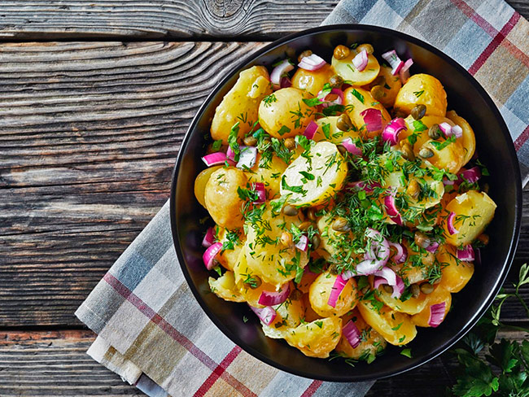
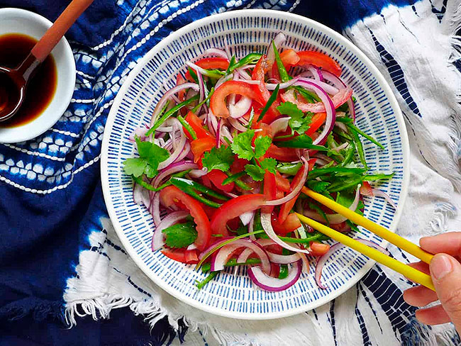
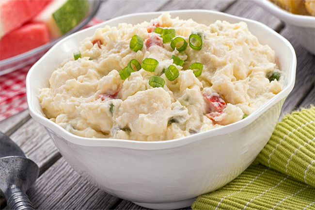

Салаты
Французский картофельный салат с красным луком
Французский картофельный салат с красным луком — это простое блюдо старой деревенской французской кухни. Такой картофельный салат может быть как и отдельным блюдом, так и выступать в качестве гарнира для блюд из мяса, птицы или рыбы. Готовится он просто, в отличие от многих других рецептов картофельного салата, в этом не используется майонез, так что блюдо получается ощутимо более легким (рецепт).
Салат «Синьцзянский тигр»
Салат «Синьцзянский тигр» состоит из четырех основных ингредиентов: помидор, красный лук, зеленый перец чили и кориандр. Считается, что название «тигр» происходит от того факта, что острый вкус лука и перца чили возбуждает ваше небо с первого взгляда, точно так же, как шок, который вы испытаете при встрече с тигром.Сочетание натуральных вкусов из четырех ингредиентов в сочетании с небольшим количеством черного рисового уксуса, соли, а также щепоткой сахара или каплей меда — это все, что требуется для этого салата. И не нужно ни капли масла. Это рецепт — прекрасный представитель уйгурской кухни (рецепт).
Картофельный салат Байю
Картофельный салат Байю — один из вариантов классического американского картофельного салата, но с оттенком каджунской (кейджн) кухни, распространенной в южных штатах Америки — Миссисипи и Лузиане. Байю означает старица — старый рукав реки или любой вялотекущий водоем, что для такой огромной реки как Миссисипи совсем не редкость.Главное отличие от обычного американского картофельного салата, так популярного для подачи на любой праздничный стол, а особенно к барбекю, в том, что здесь в заправку добавляется острый соус, обычно Табаско, что придает этому простому блюду пикантность (рецепт).